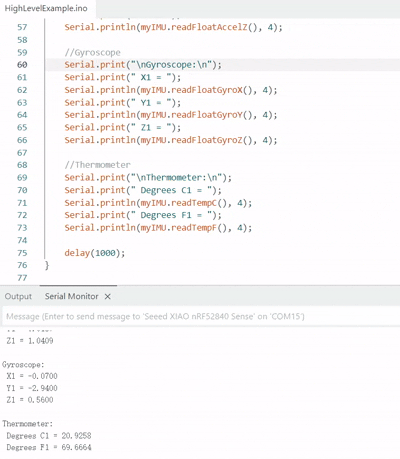
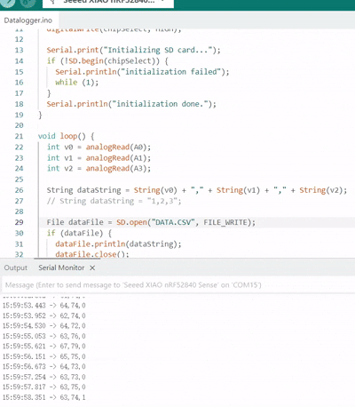
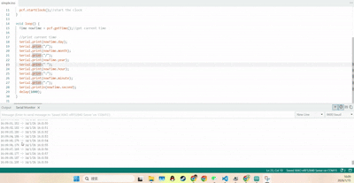

First, we started with the most basic LED blinking exercise. This is a beginner-level experiment similar to a “Hello World” program, as shown in the GIF below.

Second, we used example code to verify that the IMU on the development board works properly. The IMU (Inertial Measurement Unit) measures acceleration and rotation.
Third, we modified the example code to verify that the OLED display works correctly.

Fourth, we tested storing sensor data on the SD card.
Fifth, we utilized the RTC (Real-Time Clock) to print the current system time.
Finally, we used the buzzer to play the traditional “Happy Birthday” song.
← Back to homepage